Custom built portable Nintendo 64 console
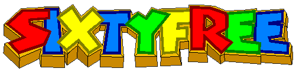
Vacuum formed from 2mm sheet polystyrene. Features include: Dual 3D
sticks, D-Pad, L button, headphone socket and expansion pack
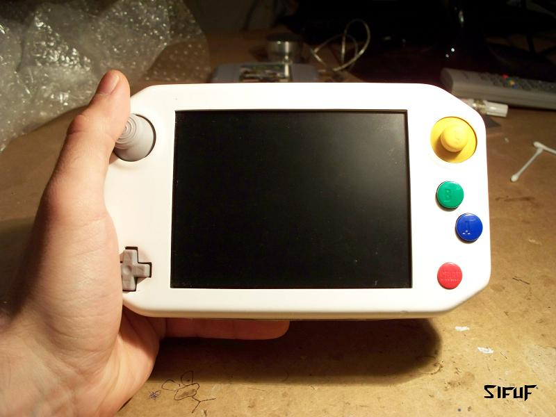
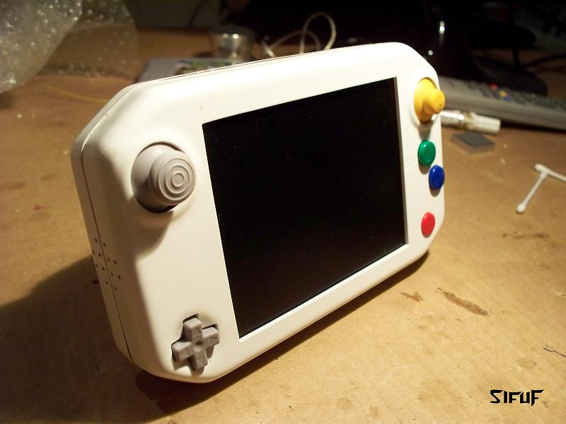
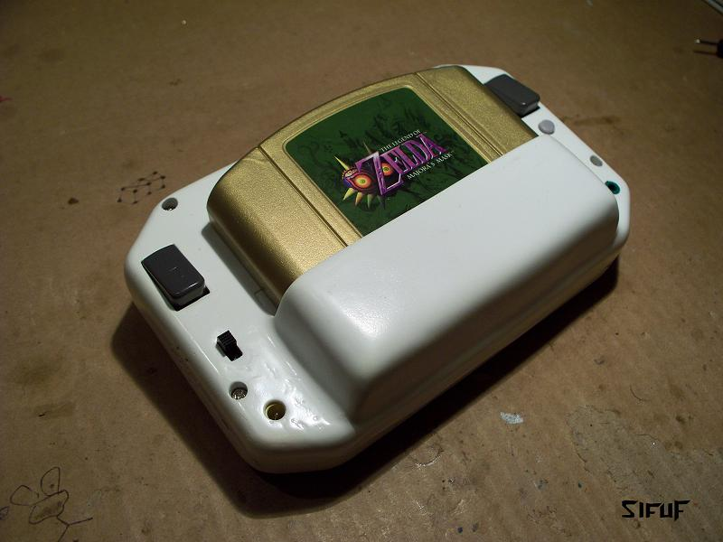
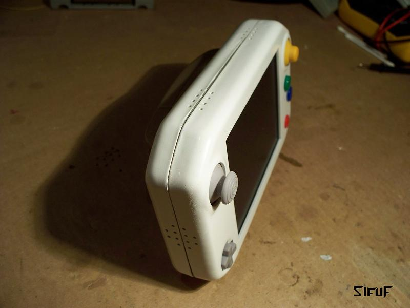
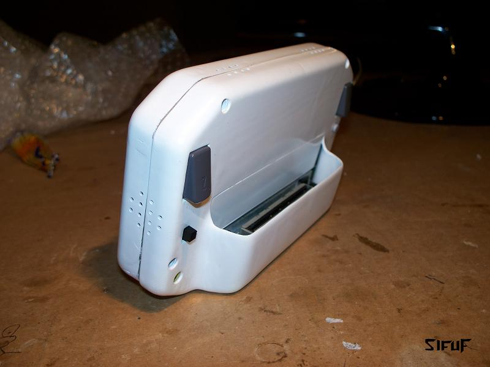
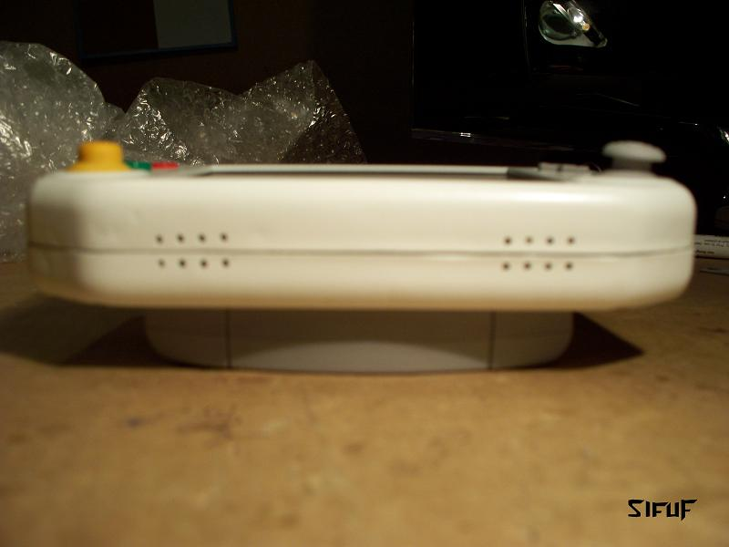
The N64 was trimmed down to approximately half of its original size.
The cartridge slot is soldered directly to pins of the RCP. Expansion
port removed and 4MB RAM trimmed and hard wired flat.
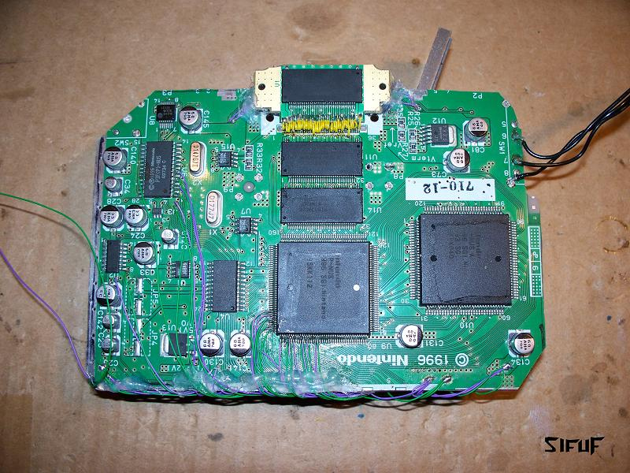
The Psone LCD backlight and inverter were replaced with LED's, and
several components relocated to allow trimming the controller pcb to
to the same size as the LCD.
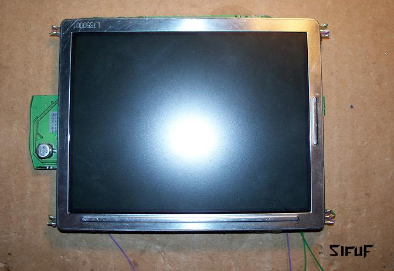
A bit of rewiring and...
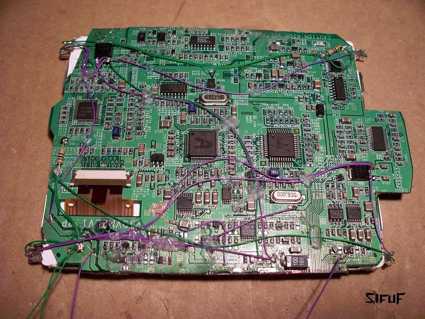
All crammed in
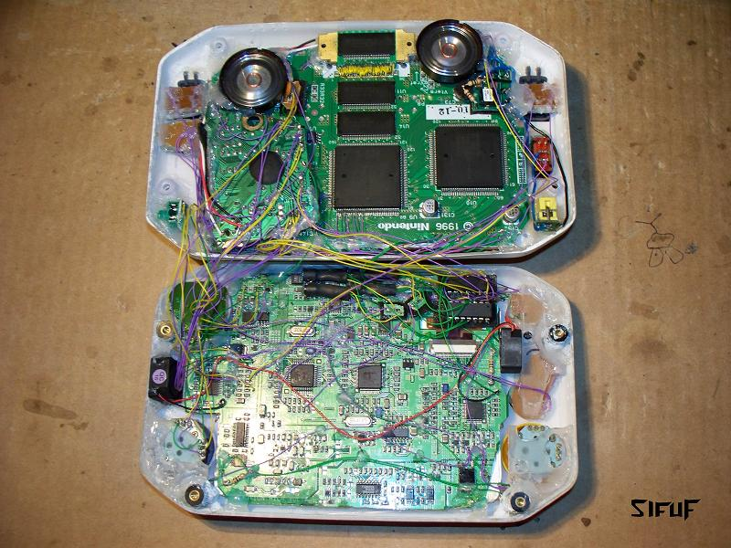
Heatsinks attached
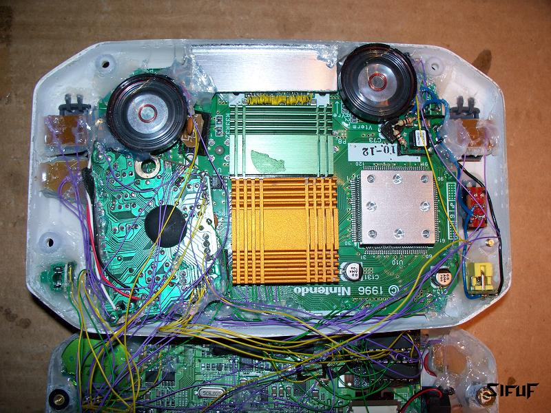
The screens controls are integral of the D-Pad. While the start button
is held down, Up/down control the volume and left/right control the
brightness. Release the start button and it reverts back to
controlling the n64.
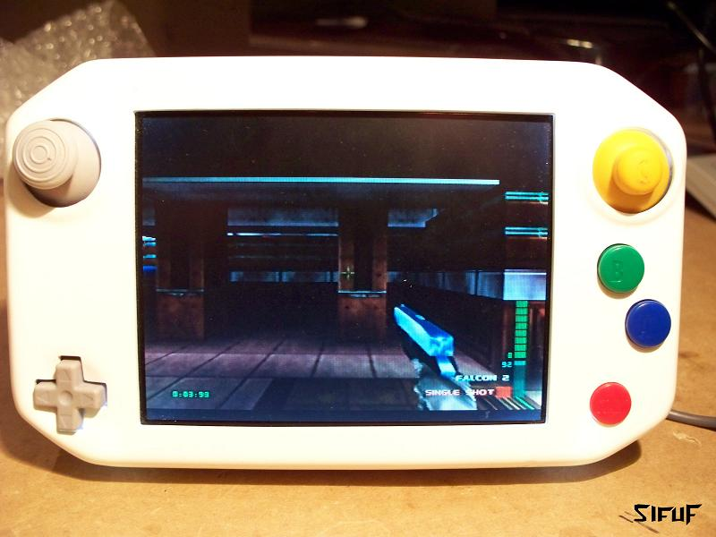
Here is the logic diagram if anyone wants to do this
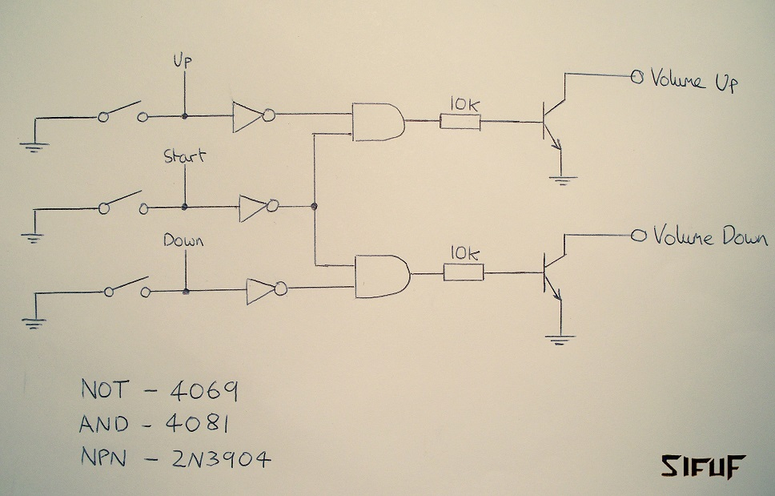
Analogue C buttons
I originally made the C buttons analogue by using an LED bargraph
circuit to inject square waves of different frequencies into the
digital inputs. The frequency would increase as you pushed the
potentiometer which would achieve the same result as rapidly tapping
the button. But, I left this out of the final design because I wasn't
happy with the result. The side straf in Goldeneye moves at a
different rate to the 'look up/down' function and this made the stick
feel somewhat inaccurate. If I have time, I may make a guide for
anyone who wishes to attempt it. So the C stick is digital and
registers a button press about halfway in each direction.
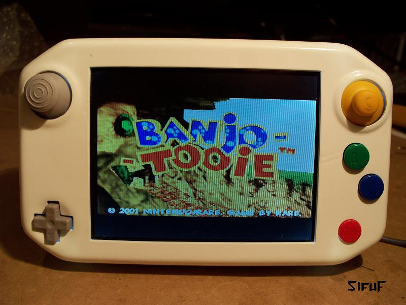